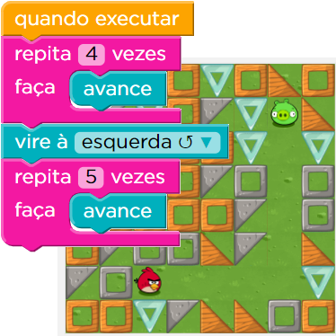
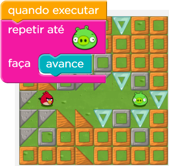
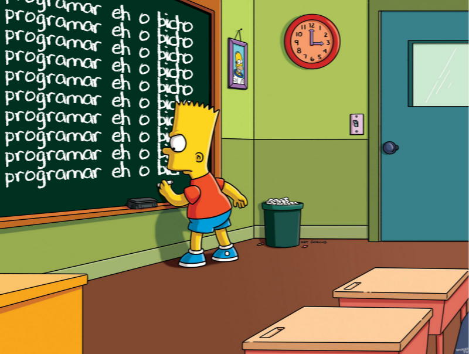

Material de apoio para a disciplina Linguagem de Programação da UACSA/UFRPE
Produzido pelo prof. João Pimentel
Opa, já aprendemos repetição com o comando for, que usamos pra repetir um pedaço do código um certo número de vezes (for in range), ou quando queremos usar repetição em uma lista (explicado na Live).
Não sei se você reparou, mas o for é bem parecido com o bloco "repita N vezes" do joguinho
Mas às vezes não sabemos quantas vezes queremos repetir. Simplesmente queremos que o computador repita até atingir um certo objetivo.
Lembra do joguinho? Pois é, além daquele "repita N vezes" o jogo também tem o bloco "repetir até", que é parecido com o comando while que iremos estudar agora.
Quantas vezes o boneco vai avançar? Não importa! O que importa é que ele vai avançar até chegar no porquinho.
Pense no Bart. Se eu quero que ele repita a frase 10 vezes, posso usar o comando for. Já se eu quero que ele repita enquanto não tiver chegado no fim do quadro, uso o comando while.
É assim que funciona um jogo, por exemplo. O jogo vai repetir enquanto a pessoa não terminou a fase E a pessoa não morreu.
Resumo: em alguns casos de repetição usamos o for, e em outros casos usamos o while. Por isso que precisamos estudar os dois.
Então vamos lá praquela aula maneira com o Guanabara? Deus lhe pague, Guanabara 🙌 ! O que seria de nós sem você?!
Vídeo 1 (38min):
Pois é, não temos como saber quantas vezes a linha 4 será executada, por que depende da resposta da pessoa, no input. Se a pessoa acertar a senha de primeira, a linha será executada só uma vez mesmo. Se a pessoa errar a senha 100 mil vezes, a linha será executada 100 mil vezes.
Depois que a gente manja dos paranauê, as linhas 3 e 4 até que fazem sentido: "enquanto a resposta for diferente de 'gq910', pergunte a(o) usuário(a) pela senha".
Ou seja: enquanto a pessoa não tiver acertadao, pergunte o nome e a senha.
Tudo o que podemos fazer com for podemos fazer com while também.
Exemplo 1 (range):
Tudo o que podemos fazer com for podemos fazer com while também.
Exemplo 2 (listas):
O código com for acaba ficando mais simples do que o código com while, por isso que é importante aprendermos o for.
Mas quando a nossa repetição não tem a ver com uma sequência, como uma sequência de números (range) ou uma sequência de elementos de uma lista, usamos o while. Por isso que é importante aprendermos ele também.
Na próxima lição veremos vários exemplos de código com o while, beleza?
Bart é uma personagem da Twentieth Century Fox Film Corporation.
YOU DIED - imagem do jogo Dark Souls, publicado pela Namco Bandai Games. Imagem do blog musicMagpie.
Imagens do jogo Hora do Código - imagens feitas por João Pimentel com base em telas do jogo.